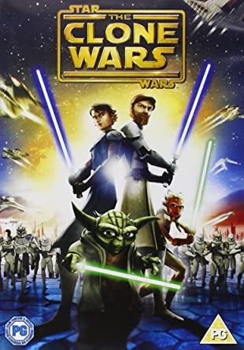
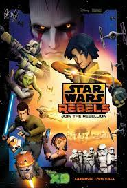
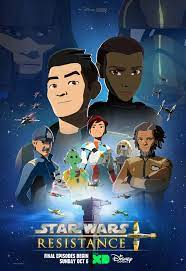
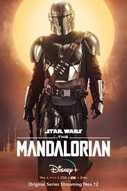
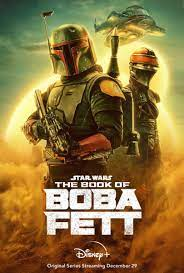

Star Wars: Clone Wars(2008-2021)
Lucasfilm Animation's first weekly television series chronicles the adventures of Anakin Skywalker, Yoda, Obi-Wan Kenobi and other popular characters from the "Star Wars" universe during the violence of the "Clone Wars" as the group minority of Jedi Knights fight to restore peace.
Star Wars: Rebels(2014-2018)
Imperial forces occupy a remote planet and are ruling and ruining the lives of its inhabitants with an iron fist. An intelligent team aboard the Ghost ship takes a stand against the Empire, pitting the villains against each other.
Star Wars: Resistance(2018-2020)
Poe Dameron recruits young pilotKazuda Xiono to become a spy for the Resistance and monitor the growing threat of the First Order.
The Mandalorian(2019-)
The adventures of Mando, a lone gunslinger and bounty hunter making his way across the farthest reaches of the galaxy, far from the jurisdiction of the New Republic.
The Bad Batch(2021-)
Members of an elite clone squad with genetic mutations find their place in a galaxy that is in permanent flux after the Clone Wars.
Star Wars: Visions(2021-)
Seven Japanese animation studios bring their unique perspectives to the "Star Wars" universe through a series of short films.
Star Wars: The Book of Boba Fett(2021-)
In the sands of Tatoonie, bounty hunter Boba Fett and mercenary Fennec Shand navigate the underworld of the Galaxy and battle for Jabba the Hutt's former territory.